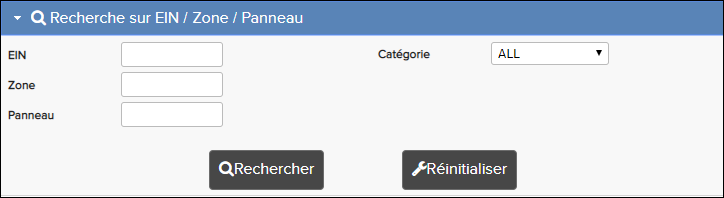
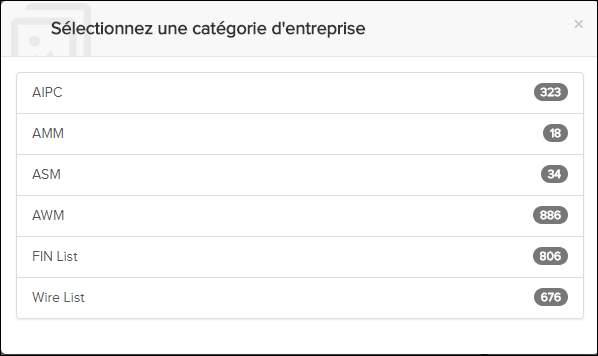
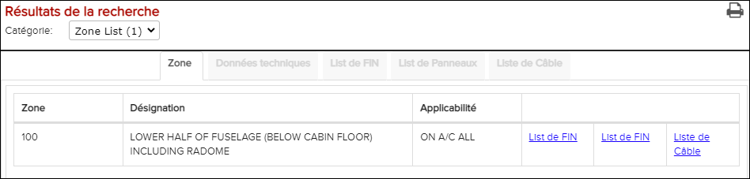

Remarque : La page de recherche FIN / Zone / Panneau est uniquement
disponible pour les données A350 et C-Series.

Page de recherche FIN / Zone / Panneau
La fenêtre
Fin/Zone/Panneau est disponible lorsque vous ouvrez
une publication A350 S1000D dans la fenêtre Librairie. Cette option de recherche a ces
catégories:
- FIN (rechercher des numéros d'identification fonctionnels)
- Zones (pour rechercher des liens de zone dans AMM, AIPC et TSM. Les résultats de la
recherche incluent également des métadonnées de zone et des listes de tous les FINS et
panneaux de la zone.)
- Panneaux (pour rechercher des liens de panneau dans AMM, AIPC et TSM. Les résultats de
la recherche incluent également des métadonnées de panneau.)
Vous pouvez effectuer des recherches complètes et partielles, et vous pouvez effectuer
une recherche sur un ensemble de catégories prédéfinies:
Lors de l'exécution d'une recherche dans une catégorie spécifique, elle retrouve
uniquement les occurrences appartenant à la catégorie choisie. Il y a aussi un option
Tous dans la liste déroulante. Si vous choisissez cette option,
elle présentera les catégories qui trouve des occurrences dans une nouvelle boîte de
dialogue:

Recherche avec "ALL" - sélectionnez la catégorie
Le nombre d'occurences par catégorie est indiqué dans le côté droit du panneau. Les
catégories qui ne retrouve pas de résultats ne sont pas affichées.
Lorsqu'une catégorie
est sélectionnée, les résultats sont répertoriés dans la section
Resultats de
recherche ci-dessous.
Conseil : La recherche du FIN peut également être
initié à partir du champ de recherche dans la barre d'en-tête. Le comportement lors de
l'utilisation du champ de recherche de la barre d'en-tête est le même que lors de la
sélection de l'option "ALL".
Il n'est pas nécessaire de tout recommencer si vous
voulez changer de catégorie, vous pouvez simplement choisir une autre catégorie dans la
liste déroulante dans l'en-tête Resultats de recherche:

Changer la catégorie
Le comportement des résultats de recherche lors de leur ouverture dépend de la
catégorie:
- AIPC: Permet de présenter un document dans le nouvel onglet AIPC dans la fenêtre
Contenu.
- AMM: Permet de présenter un document dans le nouvel onglet MSA dans la fenêtre
Contenu.
- ASM: Permet de présenter les dessins / les schémas dans la fenêtre
Graphic.
- AWM: Permet de présenter les schémas de câblage dans la fenêtre
Graphic.
- TSM ou AFI: Permet de présenter un document dans le nouvel onglet TSM ou AFI dans la
fenêtre Contenu.
- CB List: Résultats de votre recherche sont présentés dans un onglet
C/B avec une liste de FINs et leurs titres. Lorsqu'un champ FIN
est sélectionné dans la liste, les informations de la FIN sont présentées dans l'onglet
Donnée Technique.
- Liste de FIN: Les résultats de votre recherche sont présentés dans un onglet
FIN avec la liste de FINs et leurs titres. Lorsqu'un champ FIN
est sélectionné dans la liste, ses informations sont présentées dans l'onglet
Donnée Technique.
- Liste de panneau: Les résultats de votre recherche sont présentés dans l'onglet
Panneau avec la table des numéros de panneau dans des colonnes
indiquant le type, l'access à, l'access à FIN, Zone et l'applicabilité. Lorsqu'une
rangée de panneaux est sélectionnée, les informations du panneau sont présentées dans
l'onglet Donnée Technique. Si vous cliquez sur le numéro de “Zone”,
une fenêtre pop up apparaît avec les informations de la zone sélectionnée.
- Liste de câbles: Les résultats de votre recherche sont présentés dans l'onglet
FIN avec la liste de FINs et leurs titres. Lorsqu'un champ FIN
est sélectionné dans la liste, les informations sur le câblage associé au champ FIN sont
présentées dans l'onglet Câblage. Notez que le champ FIN que vous
avez sélectionné sera en gras pour l’identifier plus facilement dans l'onglet
Câblage. Vous pouvez encore sélectionner une ligne dans l'onglet
Câblagepour afficher des informations détaillées sur le câble
dans l'onglet Donnée Technique.
- Liste de zone: Les résultats de votre recherche sont présentés dans l'onglet
Zone avec la table des numéros de Zone dans des colonnes
indiquant la désignation, l'applicabilité et des liens vers la liste de FIN et la liste
de Panneau contenant tous les FINs et panneaux dans la zone. Lorsqu'une rangée de zone
est sélectionnée, les informations de cette zone sont présentées dans l'onglet
Donnée Technique, et vous pouvez ouvrir des illustrations de
zonage.
Pour plus d'informations, merci de se référer à
Effectuer une recherche sur FIN / Zone / Panneau.